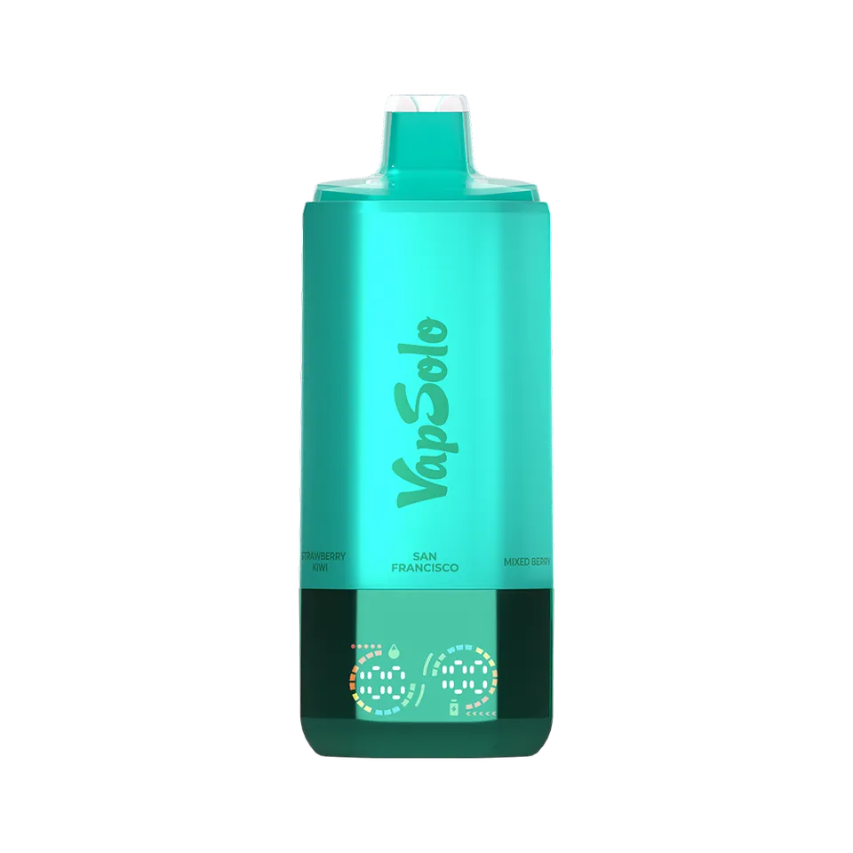
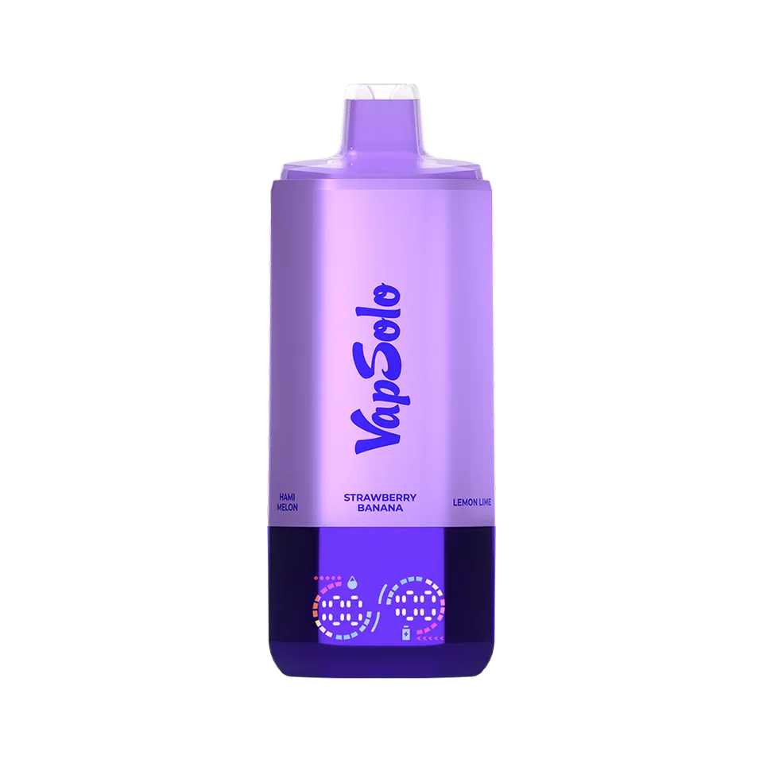
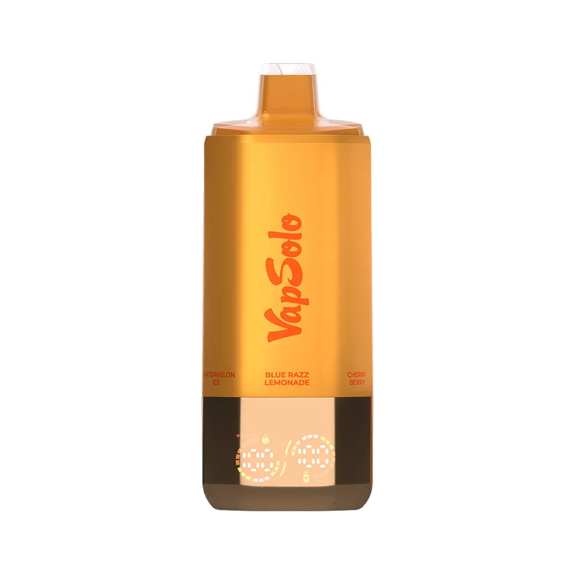
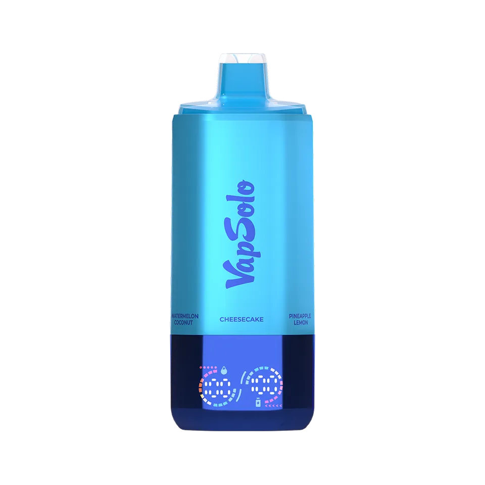
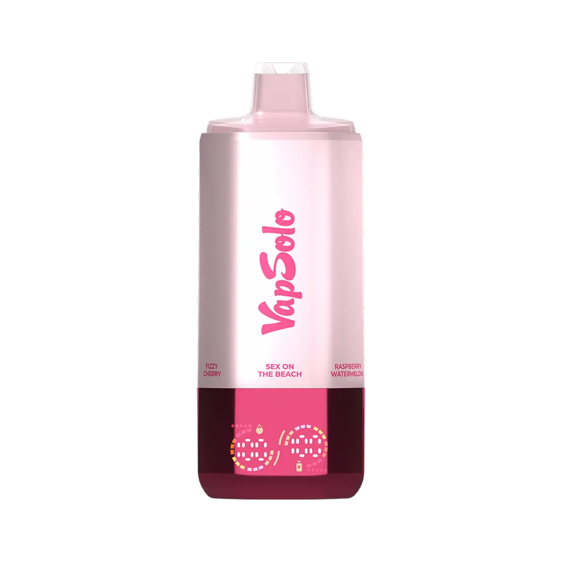
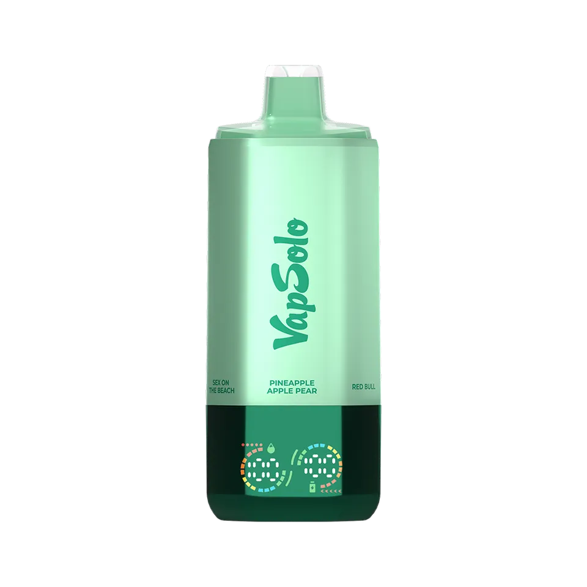
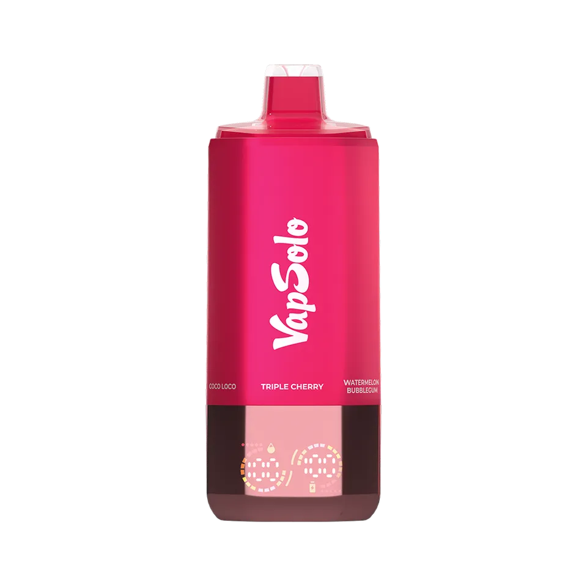

Seis depósitos separados
Cada sabor ocupa su propio depósito. Así puedes pasar de un perfil frutal a otro fresco sin cargar con seis dispositivos.
ACCESO PARA ADULTOS
Este sitio contiene información sobre productos con nicotina y está dirigido exclusivamente a mayores de 18 años.
Esta confirmación no verifica tu identidad.
ACCESO RESTRINGIDO
No puedes acceder a este sitio si eres menor de 18 años.
FORMATO 6 EN 1
Seis sabores separados en un solo dispositivo. Cambia de perfil cuando quieras y consulta batería y líquido en su pantalla integrada.

TODO EN UNO
El formato Sixer concentra seis experiencias de sabor en un cuerpo compacto y muestra de un vistazo la información esencial.
Cada sabor ocupa su propio depósito. Así puedes pasar de un perfil frutal a otro fresco sin cargar con seis dispositivos.
Selecciona uno de los seis perfiles disponibles mediante el selector integrado del dispositivo.
Consulta los indicadores de batería y líquido sin depender de estimaciones a ciegas.
Recarga la batería del dispositivo con una conexión USB-C compatible.

CÓMO FUNCIONA SIXER
Cada acabado reúne un conjunto concreto de seis sabores.
Usa el selector integrado para situarte en el perfil que quieres disfrutar.
La pantalla muestra la información disponible sobre batería y líquido.
El término «6 en 1» se refiere a los seis depósitos de sabor independientes integrados en el mismo dispositivo.
COLORES REALES
Fotografías reales de distintas combinaciones VapSolo Sixer 180K. El color exterior identifica cada selección de sabores.




DATOS ESENCIALES
Estas son las características confirmadas para VapSolo Sixer 180K. No se indican cifras de batería, líquido o dimensiones que no constan en los materiales disponibles.
COMPRAR AHORACOMBINACIONES DISPONIBLES
Diez selecciones recibidas, cada una identificada por el primer sabor de su cara frontal.
Cherry Berry · Strawberry Banana · Triple Melon · Peach Mango Pineapple · Watermelon Ice
Pineapple Lemon · Blueberry Sour Raspberry · Strawberry Mango · Lemon Lime · Watermelon Coconut
Lista recibida con cinco sabores; combinación completa sin confirmar.Cheesecake · Pina Colada · Mixed Berry · Dragonfruit Banana Cherry · Strawberry Watermelon
Love 66 · Lime Passion Fruit · Monster Mango · Strawberry Ice · Blackberry Blueberry Ice
Red Bull · Cherry Cola · Solo 1 · Strawberry Kiwi · Sex On The Beach
Mixed Berry · Coco Loco · Cherry Lemon · Black Ice Dragonfruit · Strawberry Kiwi
Raspberry Watermelon · Happy Ranch · Lemon Peach · Pink Lemonade · Fizzy Cherry
Lemon Lime · Watermelon Ice · Peach Mango Pineapple · Sour Triple Berry · Hami Melon
Watermelon Bubblegum · Juicy Peach Ice · Grapefruit Refresher · Love 66 · Coco Loco
Kiwi Passion Fruit Guava · Mango Peach · Pink Lemonade · Coconut Melon · Sakura Grape
SEIS OPCIONES. UNA ELECCIÓN.

Explora VapSolo Sixer 180K y elige la combinación que encaja contigo.
COMPRAR AHORAPREGUNTAS FRECUENTES
Sí. Su formato 6 en 1 reúne seis depósitos de sabor independientes en un solo dispositivo. Cada combinación disponible agrupa sabores concretos.
Es la cifra máxima declarada para el modelo. La cantidad real puede variar según la duración y frecuencia de cada calada y el uso del dispositivo.
El dispositivo integra un selector para elegir entre sus depósitos. Consulta siempre las indicaciones incluidas con la unidad para identificar la posición de cada sabor.
La pantalla integra información sobre el estado de la batería y del líquido para facilitar el seguimiento durante el uso.
Sí. VapSolo Sixer 180K incorpora carga USB-C. El cable y el adaptador pueden depender del paquete adquirido.